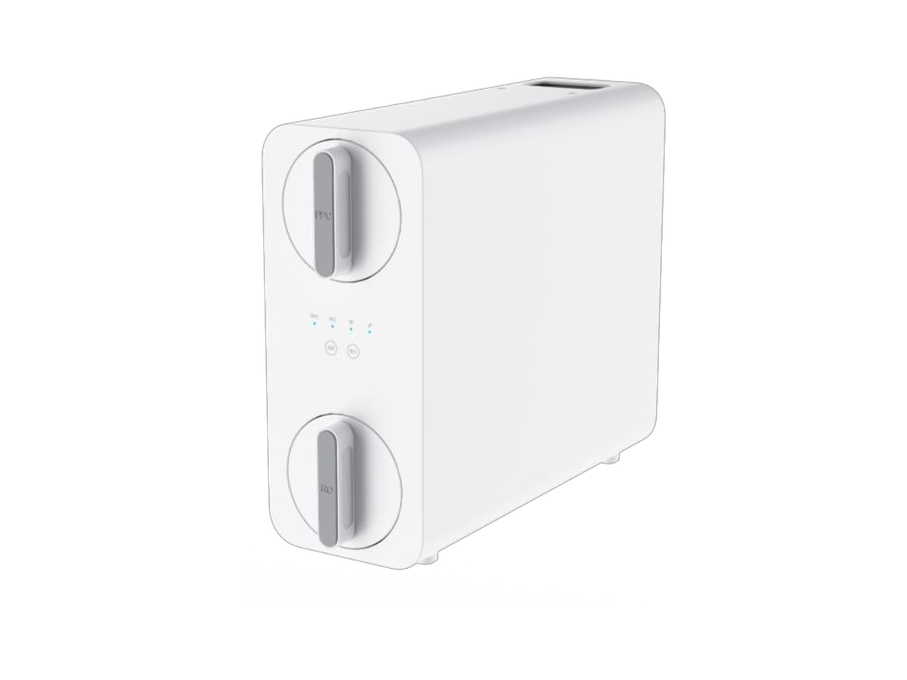

Bawah Wastafel
Bawah WastafelRP-U07
Pemurni RO bawah wastafel 400–600 GPD
SKU: RP-U07
MOQ: Konfirmasikan saat bertanya
Beranda/Produk/Sistem RO Bawah Wastafel/ RP-U05

Sistem RO Bawah Wastafel
Platform filter ODM ringkas — RO dua kartrid (X612)
RP-U05 — Platform RO kompak dua kartrid. Spesifikasi utama: Kapasitas RO 400 / 600 / 800 / 1000 / 1200 GPD. Spesifikasi dikonfirmasi per model dan pesanan.
Tegangan / frekuensi dapat dikonfigurasi sesuai negara tujuan. Konfigurasi lain dikonfirmasi per pesanan.
RP-U05 adalah platform RO ringkas dua kartrid (X612) yang mencakup 400 / 600 / 800 / 1000 / 1200 GPD. Model utama menggunakan filtrasi PPC + RO, memiliki volume air murni nominal 6000 L, dan berukuran 400 × 130 × 320 mm, dengan opsi air ganda, resirkulasi, dan pemanas. Lima varian berbagi platform dua kartrid, termasuk opsi keran layar pintar dan keran pemanas serta varian pemanas instan 1000G — lihat Varian di bawah.
Berapa jumlah pesanan minimum?
Pesanan pertama adalah 200 unit per model, dan pemesanan ulang adalah 500 unit.
Bisakah saya memesan sampel sebelum pesanan massal?
Ya. Sampel siap dalam 15 hari, dan biaya sampel dikembalikan pada pesanan massal pertama Anda. Pesanan massal membutuhkan 40 hari setelah persetujuan sampel dan dikirim FOB Shenzhen.
Bagaimana cara memilih tingkat kapasitas dan keran?
Cantumkan RP-U05 dan sebutkan variannya. Model utama (X612) mencakup 400 / 600 / 800 / 1000 / 1200 GPD; varian 600/800/1000G (X605, X606) dilengkapi keran layar pintar, dengan opsi keran pemanas pada X606; varian 800G adalah MR852-C dan varian pemanas instan 1000G adalah MRH1032.
Lima opsi pada platform RP-U05 — cantumkan RP-U05 dan sebutkan variannya.
Arahkan kursor ke gambar varian untuk melihat spesifikasinya. Di layar sentuh, ketuk gambar.



Spesifikasi lengkap setiap varian, berdampingan. Tabel spesifikasi di bawah menunjukkan nilai RP-U05.
| Spesifikasi | RP-U05-1 — model utama (X612) | RP-U05-2 — Varian 600/800/1000G (X605) | RP-U05-3 — varian 600/800/1000G, opsi keran pemanas (X606) | RP-U05-4 — Varian 800G (MR852-C) | RP-U05-5 — varian pemanas instan 1000G (MRH1032) |
|---|---|---|---|---|---|
| Kapasitas RO | 400 / 600 / 800 / 1000 / 1200 GPD | 600/800/1000G | 600/800/1000G | 800G | 1000G |
| Dimensi (P×L×T) | 400 × 130 × 320 mm | 427 × 148 × 346 mm | 466.7 × 150 × 369.3 mm | 427 × 148 × 346 mm | 471 × 198 × 429 mm |
| Kartrid | 2 | 2 | 2 | 2 | 2 |
| Tahap filtrasi | Dikonfirmasi per pesanan | 5 tahap | 5 tahap | 5 tahap | 6 tahap |
| Jenis keran | Dikonfirmasi per pesanan | Keran layar pintar | Keran layar pintar / keran pemanas | Keran layar pintar | Keran pemanas |
| Kelas efisiensi air | Dikonfirmasi per pesanan | Tingkat 1 | Tingkat 1 | Tingkat 1 | Tingkat 1 |
| Volume air murni terukur | 6000 L | Dikonfirmasi per pesanan | Dikonfirmasi per pesanan | Dikonfirmasi per pesanan | Dikonfirmasi per pesanan |
| Volume total air murni nominal | Dikonfirmasi per pesanan | 4800 L | 4800 L | 4800 L | 6500 L |
| Tegangan / frekuensi | Dapat dikonfigurasi sesuai negara tujuan | Dapat dikonfigurasi sesuai negara tujuan | Dapat dikonfigurasi sesuai negara tujuan | Dapat dikonfigurasi sesuai negara tujuan | Dapat dikonfigurasi sesuai negara tujuan |
7 baris spesifikasi dari katalog ROPureOEM.
| Kapasitas RO | 400 / 600 / 800 / 1000 / 1200 GPD |
|---|---|
| Filtrasi | PPC + RO |
| Volume air murni terukur | 6000 L |
| Dimensi L×W×H | 400 × 130 × 320 mm |
| Opsi | Air ganda / resirkulasi / pemanasan |
| Tegangan / frekuensi | Dapat dikonfigurasi sesuai negara tujuan |
| Konfigurasi lain | Dikonfirmasi per pesanan |
Spesifikasi diambil dari katalog ROPureOEM. Jika suatu nilai belum dikonfirmasi, nilai tersebut dicantumkan sebagai "Dikonfirmasi per pesanan" — kami tidak menerbitkan angka yang belum dikonfirmasi.
Bawah WastafelPemurni RO bawah wastafel 400–600 GPD
SKU: RP-U07
MOQ: Konfirmasikan saat bertanya
 Bawah Wastafel
Bawah WastafelRO bawah wastafel dengan pemanas tangki penyimpanan
SKU: RP-U08
MOQ: Konfirmasikan saat bertanya
 Bawah Wastafel
Bawah WastafelPemurni RO akses depan berkapasitas tinggi
SKU: RP-U09
MOQ: Konfirmasikan saat bertanya
 Bawah Wastafel
Bawah WastafelPemurni RO tiga kartrid
SKU: RP-U11
MOQ: Konfirmasikan saat bertanya